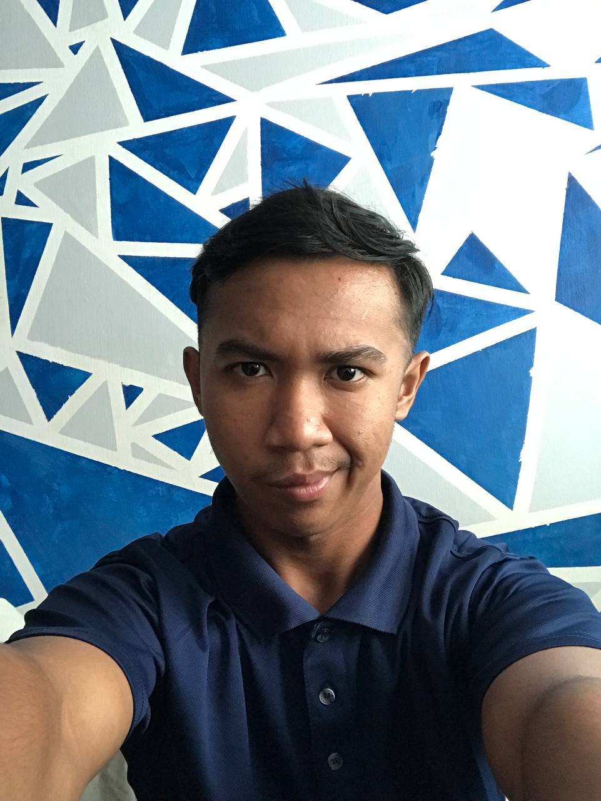
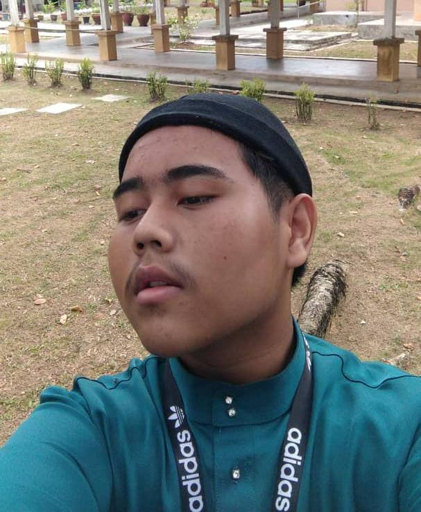
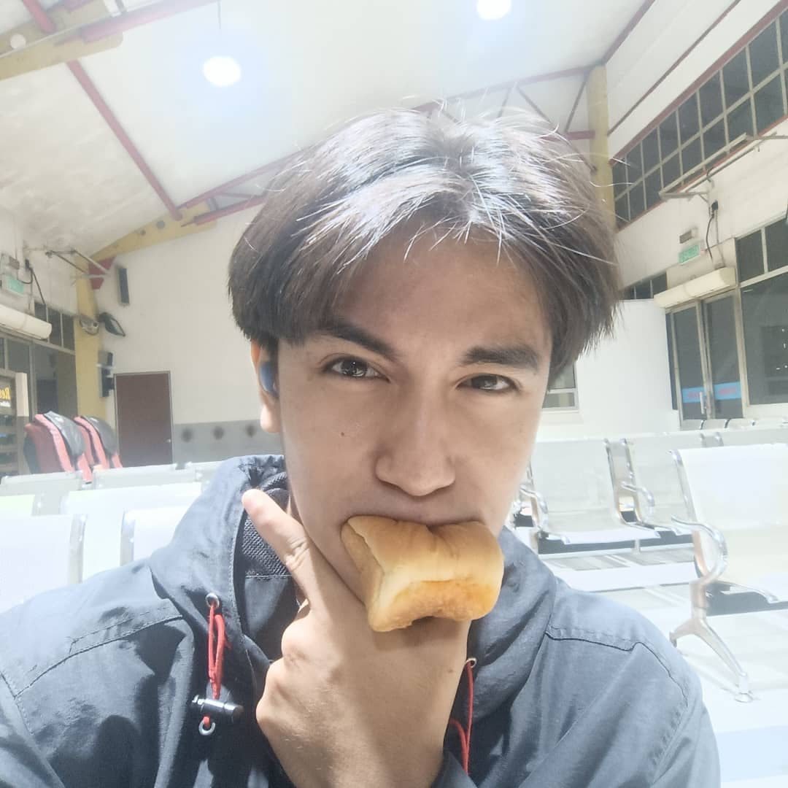
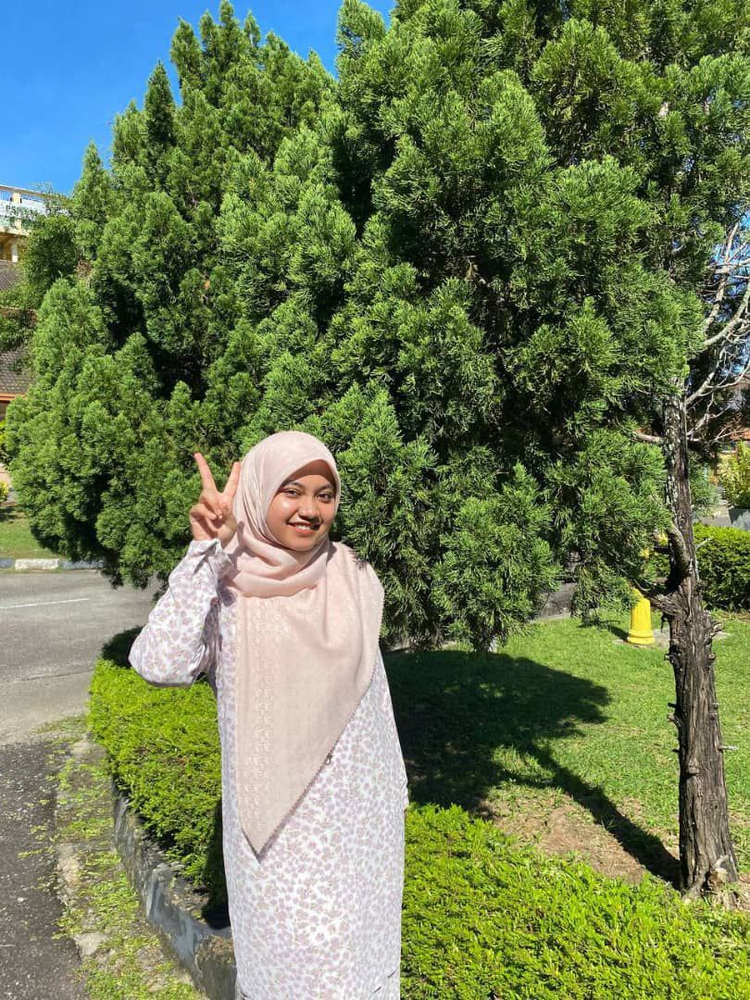

1. FARIZ DANIEL BIN ROS SHAM |‣ Forensic Computer Analyst
⦾ Interests:
⦿ Intrigued by cybercrime investigation and digital forensics.
⦿ Enjoys staying updated on the latest cybersecurity threats.
⦿ Expertise in analyzing digital evidence and incident response.
⦾ Dreams in Academics:
⦿ Obtain a Ph.D. in Cybersecurity with a focus on digital forensics.
⦿ Publish research papers on advancements in cybercrime detection.
⦾ Ambitions:
⦿ Work for a government agency as a leading forensic analyst.
⦿ Consult for private firms on cybersecurity and digital forensics strategies.
2. MUHAMMAD FARIS BIN MAHAZAN |‣ Software Engineer
⦾ Interests:
⦿ Excited about software architecture and design patterns.
⦿ Enjoys collaborating on open-source projects.
⦿ Keen on exploring the potential of machine learning in software development.
⦾ Dreams in Academics:
⦿ Pursue a Master's degree in Computer Science.
⦿ Contribute to research in the field of artificial intelligence and software engineering.
⦾ Ambitions:
⦿ Lead a team in developing innovative software solutions.
⦿ Start a tech company that focuses on sustainable and socially impactful technology.
3. MUHAMMAD HARRAZ BIN JAMIL |‣ Game Developer
⦾ Interests:
⦿ Passionate about immersive storytelling in video games.
⦿ Enjoys exploring the intersection of technology and art.
⦿ Game design and mechanics are areas of keen interest.
⦾ Dreams in Academics:
⦿ Pursue a Master's degree in Game Design or Interactive Media.
⦿ Contribute to research in virtual reality (VR) gaming.
⦾ Ambitions:
⦿ Develop an indie game that captivates players with a unique narrative.
⦿ Work for a renowned game development studio on cutting-edge projects.
4. NUR AFIQAH BINTI ABU TALIB |‣ Cyber Security Analyst
⦾ Interests:
⦿ Intrigued by ethical hacking and penetration testing.
⦿ Enjoys analyzing and mitigating security vulnerabilities.
⦿ Stays current with cybersecurity trends and threat intelligence.
⦾ Dreams in Academics:
⦿ Obtain certifications in advanced cybersecurity and ethical hacking.
⦿ Teach cybersecurity courses at a university.
⦾ Ambitions:
⦿ Lead a cybersecurity team in a multinational corporation.
⦿ Contribute to the development of global cybersecurity standards.